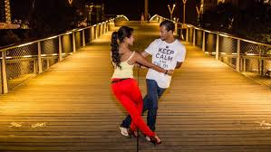
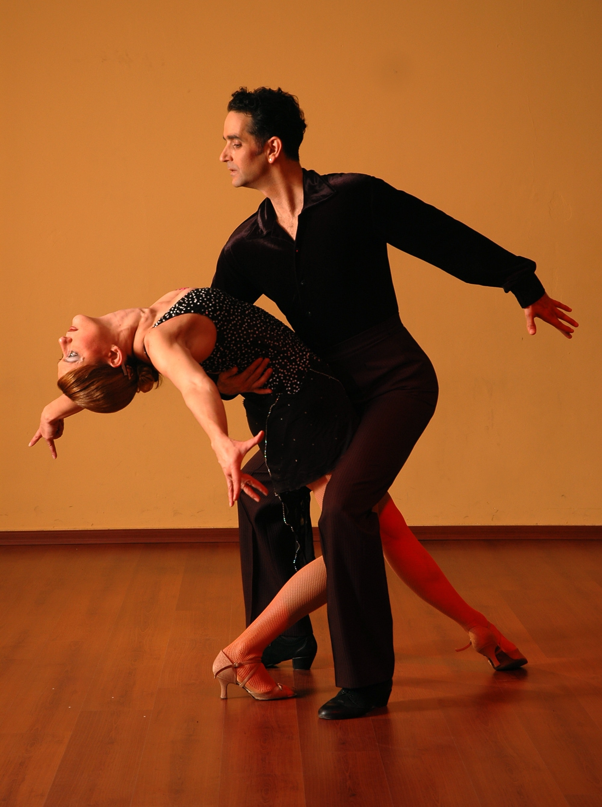

My Passion for Dance
This passion started when I was really young. I can't remember a day passing without me dancing for no reason at all.
Half the time the music was playing in my mind; and I would just move to the bit oblivious of my environment. Come to think of it, it still
happens to date.
Types of Dances
Over the years I have been priviledged to learn different types of dances. Most of which happened through association. I learned to dance to Lingala through exposure to the congolese culture,
Samba from my Brazilian friends, Kizomba from my Angolan counterparts, bachata and salsa I have learnt from the diverse latin community in St. Louis.
- Kizomba

- Salsa

What I have learned over the years, is that when it comes to dancing the main thing that matters is whether or not you are connecting. Connecting to the music, the feeling, and if
you are dancing with a partner are you connecting to your partner. I believe that building a connection is important to dancing, more so important than technic because it is hard to teach a person how to feel the music.
By feeling, I mean listening to the music, and have it resonate with you regardless of what language it is in. It is hard to be taught how to connect, but when you master the skill of connection then
there's no limit on what you can do on the dance floor.